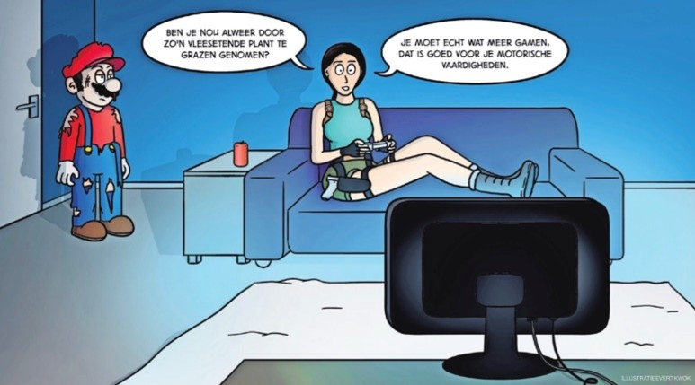

Ik woon in Alkmaar en zat op school op PCC Fabritius. Ik heb Vmbo-tl gedaan en volg nu de opleiding Software Developer om een Game Developer te worden.
Ik woon in Alkmaar.
In mijn vrije tijd game ik vooral veel, maar ik doe ook aan kickboksen.
Gamen en communiceren in het engels.
1. The Last of Us Part II 2. Red Dead Redemption 2 3. The Witcher 3: Wild Hunt – Complete Editon 4. The Legend of Zelda: Breath of the Wild 5. Warframe 6. Astro Bot 7. Cyberpunk 2077 8. God of War Ragnarok 9. The Last of Us Remastered 10. Ghost of Tsushima: Director’s Cut